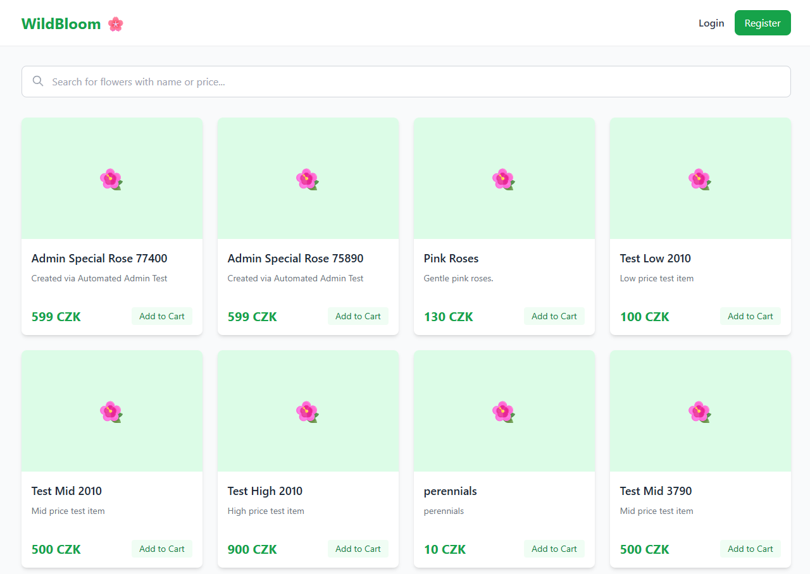
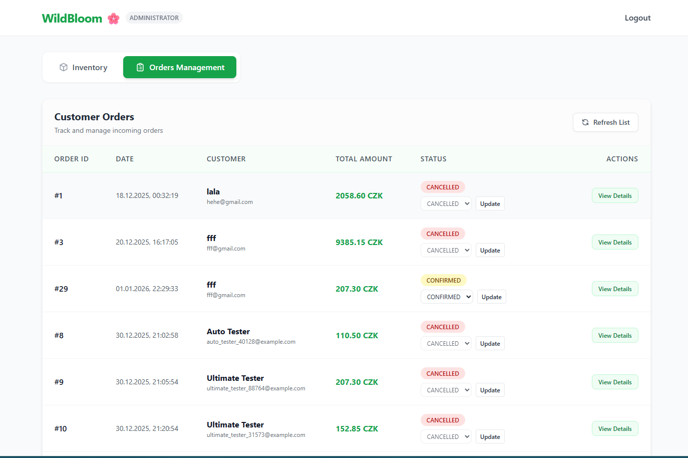
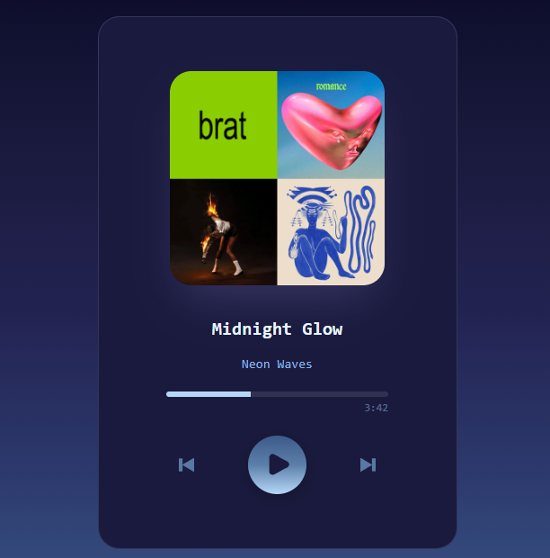

wildbloom-shop.app/products
Spring Boot + PostgreSQL
🌸 WildBloom
ADMIN
Software Engineering Student · Prague 🇨🇿
CTU Prague · 2023 – 2027
JavaScript · TypeScript · Java · Spring Boot
I build real, working applications — not just tutorials. From full-stack e-commerce with role-based auth to audio players with live Canvas visualisations.
↗ hover a card to flip it


More than a CRUD shop — a Spring Boot e-commerce system with stock-safe checkout, order state transitions, and real-time staff updates.
A customer adds flowers to the cart, but the hard work happens at checkout: Spring Boot revalidates stock, snapshots prices, and blocks invalid state changes before an order is confirmed. Behind that flow sits a layered controller/service/DAO architecture on PostgreSQL, with Spring Security separating customer, employee, and admin paths and WebSockets keeping staff in sync. JUnit 5 and Mockito cover the rules that protect inventory and order integrity. The result feels closer to a transactional commerce backend than a student demo.

A dropped MP3 becomes a searchable playlist entry with artwork, timing, and live playback.
Once a file hits the drop zone, five ES modules take over: one ingests files, one extracts metadata with jsmediatags, one drives the Audio API, one manages search, and one wires the app together. The hard part was keeping playback state, progress, cover art, and active-track UI synchronized without a framework or global store. Missing tags fall back gracefully instead of breaking the interface. It feels closer to a deliberately engineered browser client than a classroom demo.
One simulation cycle drives rooms, devices, events, and users through 7 design patterns
JEach tick moves the whole house forward: devices change state, users react to events, and the system records what every action costs in electricity, water, or gas. The architecture combines Observer, State, Visitor, Factory, Builder, Iterator, and Singleton to keep behavior modular instead of burying everything in conditionals. Reports are generated from the same event-driven model rather than stitched together afterward. It feels closer to a designed simulation engine than a typical university OOP assignment.
A restaurant URL turns into validated menu JSON through scraping, AI parsing, and smart caching.
The flow starts with a messy restaurant page, strips it down to usable text, then sends it through an LLM constrained by a JSON schema instead of trusting free-form output. TypeScript, Express, SQLite, and Zod work together to validate responses, normalize edge cases, and cache results by URL and date so repeated requests do not waste model calls. The hard part was making unreliable web content and probabilistic AI output behave like a predictable API. It feels closer to an engineered extraction pipeline than a student CRUD backend.
I'm a Software Engineering student at CTU Prague originally from Ukraine, building projects that go well beyond university assignments.
I enjoy the full journey — from designing a clean data model to making the UI feel just right. I care about clean code, solid tests, and software that actually works.
When I'm not coding I'm exploring what AI tools can do, or figuring out how to make my next project more interesting than the last one.